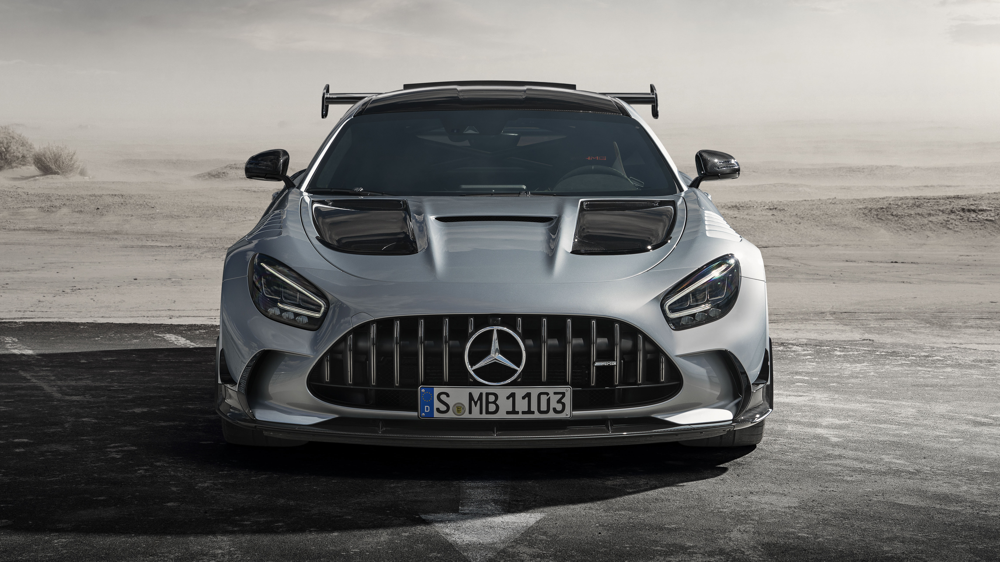

Erő, forma, magabiztosság
A GT egy olyan Mercedes, amelynél minden részlet a teljesítményt szolgálja, mégis megmarad az a prémium hangulat, ami a márkát felismerhetővé teszi.
Hosszú motorháztető
A klasszikus sportautó-arányok azonnal jelzik, hogy ez az autó a vezetőről és a vezetés élményéről szól.
AMG hangolás
A futómű, a kormányzás és a hajtáslánc összehangolt működése határozott, közvetlen visszajelzést ad minden helyzetben.
Sportos belső tér
A vezetőközpontú utastér és az áramvonalas részletek a tempós, mégis elegáns utazás élményét erősítik.
Főbb adatok
Ez egy egyszerű, bemutató jellegű áttekintés a GT karakteréről és képességeiről.
| Jellemző | Mercedes-AMG GT | Hatás |
|---|---|---|
| Motor | V8 biturbó | Erős, karakteres gyorsulás |
| Vezetési pozíció | Alacsony, közvetlen | Sportautós kapcsolat az úttal |
| Hangulat | AMG stílus | Feszes, prémium és agresszív |
AMG DYNAMIC SELECT
Válassz karaktert egyetlen gombnyomással. A háttérfény és a teljesítmény-karakterisztika azonnal alkalmazkodik.
Comfort Mód
Finom rugózás, csendes kipufogó és selymes váltások a mindennapi utazásokhoz.
Sport+ Mód
Közvetlen gázreakció, keményebb futómű és visszadurrogó kipufogóhang.
RACE Mód
Közúti versenypálya: maximális teljesítmény, kikapcsolt elektronikai korlátok.
V8 Biturbo Telemetria
A mérnöki precizitás és a nyers erő találkozása valós idejű AMG teljesítménnyel.
Lóerő (LÉ)
Maximális teljesítmény
Nyomaték (Nm)
2500–4500 ford./perc között
0–100 km/h
Aero-Aktivitással
Részletek közelről
Az alábbi képek a GT formavilágát és sportos jelenlétét mutatják be egyszerűen, különösebb körítés nélkül.


